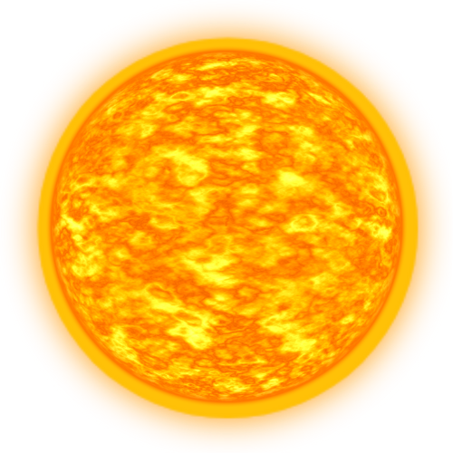

Galaxias
Vía Láctea
- Tipo Galaxia:Espiral.
- Masa: 1,5×1012 Msol.
- Tipo Giro: Horario.
- Diámetro: 100-120 miles años luz.
- Grosor: 1.000 a 2.000 años luz.
- Número Estrellas: 100-400 miles de millones.
Galaxia de Andrómeda (M31)
- Tipo Galaxia:Espiral.
- Masa: 1,2×1012 Msol.
- Tipo Giro: Horario.
- Diámetro: 220 miles años luz.
- Grosor: 1.000 a 2.000 años luz.
- Número Estrellas: 1 billón de Estrellas.
Galaxia del Girasol (M63 o NGC 5055)
- Tipo Galaxia:Espiral.
- Masa: 1×1011 Msol.
- Tipo Giro: Antihorario.
- Diámetro: 97 miles años luz.
- Grosor: 1.000-2.000 años luz.
- Número Estrellas: 400 miles de millones.
Galaxia del Molinete (M101 o NGC 5457)
- Tipo Galaxia:Espiral.
- Masa: 1×1012 Msol
- Tipo Giro: Antihorario.
- Diámetro: 170 miles años luz.
- Grosor: 1.700-3.400 años luz.
- Número Estrellas: 100 miles de millones.
Galaxia del Sombrero (M104)
- Tipo Galaxia:Galaxia espiral con un bulbo prominente.
- Masa: 8×1011 Msol.
- Tipo Giro: Antihorario.
- Diámetro: 50 miles años luz.
- Grosor: 2.000 años luz.
- Número Estrellas: 100 miles de millones.
Galaxia del Triángulo (M33)
- Tipo Galaxia:Espiral.
- Masa: 5×1010 Msol.
- Tipo Giro: Antihorario.
- Diámetro: 60 miles años luz.
- Grosor: 1.000 a 2.000 años luz.
- Número Estrellas: 40 miles de millones.
Galaxia de Bode (M81)
- Tipo Galaxia:Espiral.
- Masa: 1×1012 Msol.
- Tipo Giro: Antihorario.
- Diámetro: 90 miles años luz.
- Grosor: 3.000 a 5.000 años luz.
- Número Estrellas: 250 miles de millones.
Galaxia Antennae (NGC 4038/NGC 4039)
- Tipo Galaxia:Galaxia en interacción.
- Masa: 1.3×1011 Msol.
- Tipo Giro: No tiene giro definido.
- Diámetro: 100 miles años luz.
- Grosor: 1.000 a 3.000 años luz.
- Número Estrellas: 500 miles de millones.
Galaxia del Cigarro (M82)
- Tipo Galaxia:Irregular.
- Masa: 1x1010 Msol.
- Tipo Giro: Sin giro, rotación en regiones centrales.
- Diámetro: 37 miles años luz.
- Grosor: 1.000 a 2.000 años luz.
- Número Estrellas: 30 miles de millones.
